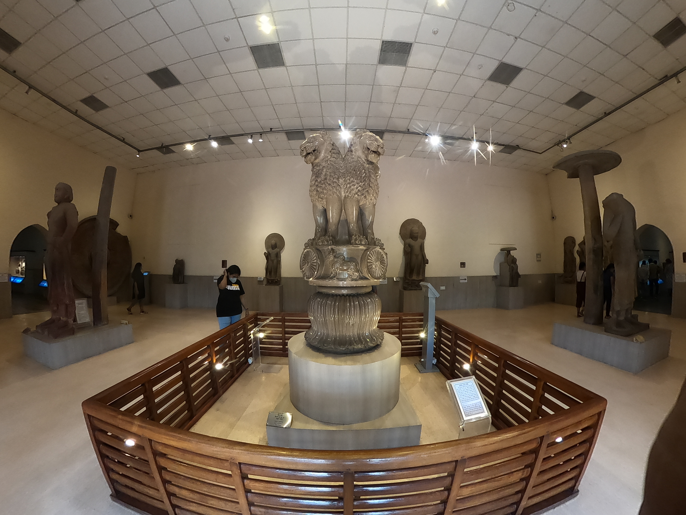

National Symbols & Pioneers of India & World
Comprehensive compendium of India's national emblems, flag specifications (2:3), Saka calendar mechanics, and historical firsts: first presidents, prime ministers, scientists, cosmonauts, women judges, and global trailblazers from Neil Armstrong to Sirimavo Bandaranaike.

National Symbols of the Republic of India
Constitutional adoption, historical origins, and statutory specifications
Flag & State Emblem
National Flag (Tiranga): Designed by Pingali Venkayya; adopted on 22nd July 1947. Specified ratio of width to length is 2 : 3. Saffron (courage), White (truth/peace), Green (faith/fertility). Center has navy blue 24-spoke Ashoka Chakra.
State Emblem: Adapted from the Lion Capital of Ashoka at Sarnath; adopted on 26th January 1950. Features 4 lions standing back-to-back. Abacus has horse, bull, lion, elephant. Inscribed below is "Satyameva Jayate" in Devanagari script from the Mundaka Upanishad.
Anthem, Song & Calendar
National Anthem (Jana Gana Mana): Composed by Rabindranath Tagore; first sung on 27th December 1911 at the Calcutta Session of INC. Adopted on 24th January 1950. Playing time: 52 seconds.
National Song (Vande Mataram): Composed by Bankim Chandra Chattopadhyay in Sanskrit/Bengali in his novel Anandamath (1882); first sung at 1896 INC session.
National Calendar: Based on the Saka Era (78 AD); adopted on 22nd March 1957. Normal year starts on 22nd March (21st March in leap years) with month Chaitra.
National Flora & Fauna
- National Animal: Royal Bengal Tiger (Panthera tigris) - adopted 1973 (replaced Lion).
- National Bird: Indian Peacock (Pavo cristatus) - declared 1963.
- National Aquatic Animal: Ganges River Dolphin (Platanista gangetica) - notified 2009.
- National Heritage Animal: Indian Elephant (Elephas maximus) - declared 2010.
- National Flower: Lotus (Nelumbo nucifera).
- National Tree: Banyan Tree (Ficus benghalensis).
- National River: Ganga - declared 2008.
First in India: Male Trailblazers
Constitutional heads, civil servants, armed forces commanders, and science pioneers
| Designation / Achievement | Personality | Year / Landmark Context |
|---|---|---|
| First President of Independent India | Dr. Rajendra Prasad | 1950–1962 (Longest serving President) |
| First Prime Minister of India | Pt. Jawaharlal Nehru | 1947–1964 (Longest serving PM) |
| First Indian Nobel Laureate | Rabindranath Tagore | 1913 in Literature (Gitanjali) |
| First Indian in Space | Sq. Ldr. Rakesh Sharma | April 1984 on Soviet Soyuz T-11 |
| First Chief Justice of India (CJI) | Justice H.J. Kania | Appointed 26th January 1950 |
| First Chief Election Commissioner (CEC) | Sukumar Sen | Conducted 1st General Election 1951-52 |
| First Commander-in-Chief of Indian Army | General K.M. Cariappa | Took command 15th January 1949 (Army Day) |
| First Field Marshal of India | Sam Manekshaw | 1973 (Architect of 1971 Liberation War) |
| First Indian to join Indian Civil Service (ICS) | Satyendranath Tagore | 1863 (Elder brother of Rabindranath) |
| First Indian to swim English Channel | Mihir Sen | 1958 |
First in India: Female Trailblazers
Women pioneers in governance, constitutional law, police, and mountaineering
| Designation / Achievement | Personality | Year / Landmark Context |
|---|---|---|
| First Woman President of India | Pratibha Devisingh Patil | 2007–2012 (12th President of India) |
| First Woman Prime Minister of India | Indira Gandhi | Assumed office January 1966 |
| First Woman Governor of a State | Sarojini Naidu | Governor of United Provinces (UP), 1947 |
| First Woman Chief Minister of a State | Sucheta Kripalani | Chief Minister of Uttar Pradesh, 1963–1967 |
| First Woman Supreme Court Judge | Justice M. Fathima Beevi | Appointed 6th October 1989 |
| First Woman IPS Officer | Kiran Bedi | Joined service in 1972 |
| First Indian Woman to scale Mt. Everest | Bachendri Pal | 23rd May 1984 (Santosh Yadav climbed twice) |
| First Woman Nobel Peace Prize (India) | Mother Teresa | 1979 Nobel Peace Prize (Missionaries of Charity) |
| First Indian Woman to win Booker Prize | Arundhati Roy | 1997 for 'The God of Small Things' |
| First Indian Woman in Space | Kalpana Chawla | 1997 on STS-87 (Columbia space shuttle) |
First in the World: Global Pioneers
Explorers, cosmonauts, and leaders who charted unprecedented global human achievements
Yuri Gagarin (USSR) — 12th April 1961 aboard Vostok 1.
First woman in space: Valentina Tereshkova (1963).
Neil Armstrong (USA) — 20th July 1969 on Apollo 11.
Followed moments later by Edwin "Buzz" Aldrin.
North Pole: Robert Peary (1909); South Pole: Roald Amundsen (1911).
Amundsen reached Antarctica 5 weeks ahead of Scott.
Edmund Hillary (NZ) & Tenzing Norgay (Nepal) — 29 May 1953.
First woman: Junko Tabei of Japan (1975).
Sirimavo Bandaranaike (Sri Lanka) — 21st July 1960.
First woman President in world: Isabel Perón (Argentina 1974).
Trygve Lie of Norway — served 1946–1952.
First woman President of UN General Assembly: Vijaya Lakshmi Pandit (1953).
Active Recall Flashcards
Interactive 3D flip cards covering flag dimensions, national motto, calendar, and historical firsts
High-Yield Prelims Exam Simulator
Five standard multiple-choice questions on Mundaka Upanishad, flag ratio, Fathima Beevi, and lunar firsts